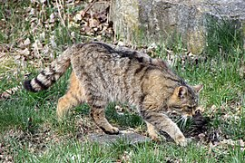

კატა (Felis) — მტაცებელი ძუძუმწოვრების გვარი კატისებრთა ოჯახისა. ტანად პატარა ცხოველებია. აქვთ ვერტიკალური გუგა, ჩამალული ბრჭყალები.
გავრცელებული არიან მთელ მსოფლიოში, ავსტრალიისა და მადაგასკარის გარდა.
კატა აერთიანებს 29 სახეობას, რომელთაგან საქართველოში გვხვდება 4.
იკვებებიან წვრილი ხერხემლიანებით, ზოგჯერ თავს ესხმიან ირემსაც. ერთგვარ ზიანს აყენებენ სანადირო მეურნეობას და მესაქონლეობას.
